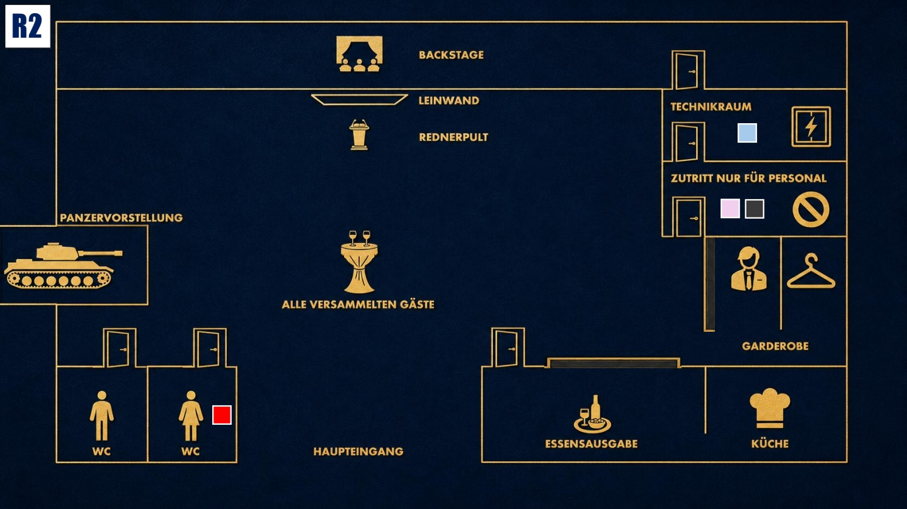

Druck aufbauen
Das Spiel wird intensiver. Nutze neue Informationen klug und bringe andere in Erklärungsnot.

Das Ziel der zweiten Runde
Finde heraus, ob jemand von deiner Vergangenheit aus dem Jahr 1996 weiß und warum sie gerade heute wieder relevant wird. Beobachte die anderen Gäste genau und versuche herauszufinden, wer dich gezielt unter Druck setzen will.
Deine Ausgangslage
Seit dem Blackout hast du das Gefühl, dass deine Vergangenheit aus dem Jahr 1996 wieder wichtig wird. Du weißt nicht, wer davon weiß, aber einige Gäste scheinen genau auf deine Reaktionen zu achten. Auch Enisa verunsichert dich. Sie wollte unbedingt, dass du den Job bei Stahlmann & Faust annimmst, und verhält sich seit einigen Wochen anders als früher. Du kannst nicht beweisen, dass sie dich manipuliert, aber du glaubst, dass sie dir etwas verschweigt.
Deine Geheimnisse
1. 1996 war der Anfang: Seit 1996 stehst du in einem Zusammenhang mit Kolumbien und einem Netzwerk, das du mental nie ganz losgeworden bist. In deiner Karriere als Soldat ist etwas geschehen, das dich beruflich und privat zerstören würde. Du kannst es nicht rückgängig machen.
2. Deine Therapie fühlt sich seit Wochen eigenartig an: Du kannst nicht beweisen, dass Enisa dich manipuliert, aber du spürst, dass etwas nicht stimmt. Sie ist seit vielen Jahren eine deiner engsten Freundinnen. Doch plötzlich war es ihr sehr wichtig, dass du den Job annimmst, den Luisa dir angeboten hat.
Deine Mission
1. Gehe deinem Bauchgefühl nach: Finde heraus, ob das, was 1996 geschehen ist, am heutigen Abend wieder auflebt.
2. Prüfe Enisa genauer: Versuche herauszufinden, was hinter ihrem seltsamen Verhalten steckt und warum sie wollte, dass du den Job bei Stahlmann & Faust annimmst.
Deine Erinnerung an 19:00 Uhr

Zum Vergrößern tippen
Während Zoe auf der Toilette ist, schleichst du dich in den Mitarbeiterraum, um Luisa heimlich zu treffen. Du weißt außerdem, dass Eric Dumont zu diesem Zeitpunkt im Technikraum arbeitet.
Mögliche Fragen
An Luisa: „Wieso hast du mich damals wirklich eingestellt?“
An Enisa: „In letzter Zeit verhältst du dich eigenartig. Ist alles in Ordnung?“